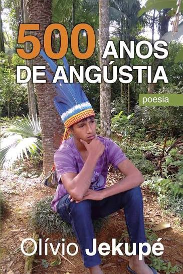

500 anos de angústia

Sobre o autor
“Sou natural do Paraná, atualmente moro na aldeia krukutu, em São Paulo.
Estudei Filosofia na USP por quatro anos o que me ajudou muito a ter conhecimento.
Trabalhei como professor em Curitiba, em 1991, e em Osasco, nos anos de 1992 até 1996, já em 1998, trabalhei como professor na aldeia Laranjinha no Paraná.
Também sou palestrante há mais de 20 anos, nas quais gosto de falar sobre a questão indígena, os problemas sociais e a literatura nativa.”
Dados da edição
- Editora
- Scortecci Editora
- ISBN
- 9788553060429
- Páginas
- 61
- Lançamento da edição
- 29/08/2019
Fonte
As informações foram retiradas do site: Amazon.